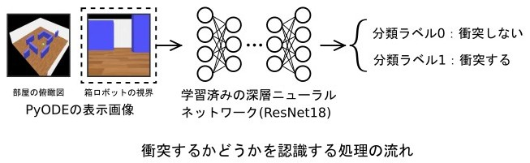

PyODEの物理演算+深層学習(ResNet18)
: ロボットビジョン1
「転がる箱ロボットの衝突回避」
ロボットビジョン1 「転がる箱ロボットの衝突回避」の実行例
箱ロボットの視界から障害物が有るかどうかを判定して、障害物が無い方に転がって進みます。 障害物の判定は、学習済みの深層学習モデル(ResNet18)が行います。 ResNet18の学習は、左側の動画の3D空間から作成した学習用画像を使って行いました。 左側の動画は、学習用画像と同じ環境で衝突回避を行っています。 右側の動画は、今回の学習済みモデル(ResNet18)にとっては、未知の環境ですが、上手く衝突回避することが出来ました。